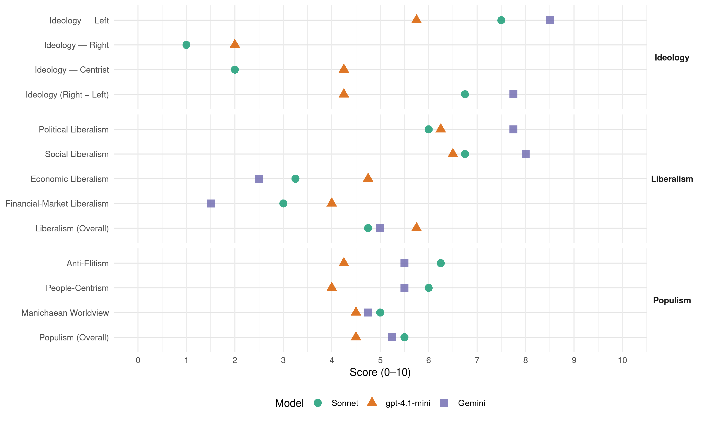

PCP (Portugal, 1991)
manifesto_id 35220_199110
Get full text: This site shows derived annotations and short verbatim quotes only. The full manifesto text is © Manifesto Project / WZB — obtain it via manifesto-project.wzb.eu using the manifesto_id above.
Headline scores
| Dimension | Sonnet | gpt-4.1-mini | Gemini |
|---|---|---|---|
| Populism (Overall) | 5.5 | 4.5 | 5.2 |
| Anti-Elitism | 6.2 | 4.2 | 5.5 |
| People-Centrism | 6.0 | 4.0 | 5.5 |
| Manichaean Worldview | 5.0 | 4.5 | 4.8 |
| Ideology (Right − Left) | 6.8 | 4.2 | 7.8 |
| Liberalism (Overall) | 4.8 | 5.8 | 5.0 |
| Political Liberalism | 6.0 | 6.2 | 7.8 |
| Social Liberalism | 6.8 | 6.5 | 8.0 |
| Economic Liberalism | 3.2 | 4.8 | 2.5 |
| Financial-Market Liberalism | 3.0 | 4.0 | 1.5 |
Evidence per dimension
Economic Liberalism
Gemini · score 3.0 · verified · chunk 1
“suspensão do processo de privatizações”
dominação de grupos estrangeiros. A suspensão do processo de privatizações, bem como o apuramento rigoroso das situações
Gemini · score 2.0 · verified · chunk 2
“eliminação dos latifúndios e apoio e fomento”
dando-se cumprimento ao imperativo constitucional de eliminação dos latifúndios e apoio e fomento do sector cooperativo de produção agrícola
Gemini · score 2.0 · verified · chunk 3
“lei do lucro das indústrias de produção”
O mecenato não pode substituir as responsabilidades do Estado para com a cultura. A lei do lucro das indústrias de produção cultural não pode sobrepor-se
Gemini · score 3.0 · verified · chunk 4
“reforma da Política Agrícola Comum”
de interesse para a economia portuguesa, impõe-se uma profunda reforma da Política Agrícola Comum, que tenha em
gpt-4.1-mini · score 6.0 · verified · chunk 1
“defesa e dinamização do sector público”
…defesa e dinamização do sector público. Para o PCP, um forte SEE é condição necessária… o processo de privatizações desencadeado pelo Governo do PSD não é o caminho capaz de promover a modernização da economia portuguesa…
gpt-4.1-mini · score 3.0 · verified · chunk 2
“política de rendimentos que conduza ao progressivo reforço do peso dos salários”
uma mais justa repartição funcional do Rendimento Nacional é uma questão central para a redução das desigualdades sociais. Por isso, o PCP propõe e defende uma política de rendimentos que conduza ao progressivo reforço do peso dos salários na distribuição do Rendimento.
gpt-4.1-mini · score 4.0 · verified · chunk 3
“a lei do lucro das indústrias de produção cultural não pode sobrepor-se”
A lei do lucro das indústrias de produção cultural não pode sobrepor-se ao necessário desenvolvimento e democratização da cultura. Indústria, comércio, mercado, são realidades que crescentemente intervêm na cultura, mas esta não se reduz a uma parte da economia.
gpt-4.1-mini · score 6.0 · verified · chunk 4
“reforma financeira da CEE que possibilite o aumento dos seus recursos próprios”
Entre os instrumentos ligados à coesão económica e social assume papel importante o orçamento comunitário e a sua problemática. Nesse âmbito, o PCP propõe. - reforma financeira da CEE que possibilite o aumento dos seus recursos próprios e garanta o reforço efectivo dos fundos estruturais após 1992, em favor dos países e regiões economicamente mais débeis.
Sonnet · score 3.0 · verified · chunk 1
“suspensão do processo de privatizações”
A suspensão do processo de privatizações, bem como o apuramento rigoroso das situações de violação de critérios de legalidade e transparência que lhe têm estado associados, constituem uma exigência de defesa do interesse nacional
Sonnet · score 3.0 · verified · chunk 2
“defesa do SEE, como componente essencial”
A defesa do SEE, como componente essencial de uma organização económica capaz de promover o desenvolvimento económico, social e tecnológico e de garantir a soberania nacional
Sonnet · score 3.0 · verified · chunk 3
“A lei do lucro das indústrias de produção cultural”
A lei do lucro das indústrias de produção cultural não pode sobrepor-se ao necessário desenvolvimento e democratização da cultura.
Sonnet · score 4.0 · verified · chunk 4
“liberalização dos movimentos de capitais”
o seu financiamento em condições de mercado, a liberalização (em curso) dos movimentos de capitais e a coordenação voluntária das políticas orçamentais
Financial-Market Liberalism
Gemini · score 2.0 · verified · chunk 1
“patrocínio do negocismo e da especulação financeira”
pela assimilação do partido do governo ao Estado, pelo patrocínio do negocismo e da especulação financeira. Seja para dar resposta a prementes problemas
Gemini · score 1.0 · verified · chunk 2
“reconstituição de grupos financeiros privados através da privatização”
Espanhol (transferindo para o domínio estrangeiro parcelas importantes de um centro de decisão essencial para o financiamento do desenvolvimento nacional); e pela reconstituição de grupos financeiros privados através da privatização de bancos e seguradoras públicos
Gemini · score 1.0 · verified · chunk 3
“liberalização do movimento de capitais”
eliminação das barreiras alfandegárias técnicas e fiscais, a liberalização do movimento de capitais e a segunda fase de transição agrícola
Gemini · score 2.0 · verified · chunk 4
“combater os movimentos especulativos de capitais”
acompanhada da correspondente harmonização fiscal, por forma a combater os movimentos especulativos de capitais e a defender o sistema
gpt-4.1-mini · score 4.0 · verified · chunk 1
“concentração monopolista da comunicação social”
…a instrumentalização da comunicação social pública - com especial destaque para a RTP - transformando-a numa caixa de ressonância da propaganda governamental… combate à formação de monopólios da comunicação social…
gpt-4.1-mini · score 3.0 · verified · chunk 2
“elevadas taxas de juros e margens especulativas de intermediação bancária”
A política monetária prosseguida traduz-se em elevadas taxas de juros e margens especulativas de intermediação bancária (que penalizam o investimento e a actividade das empresas produtivas) e numa crescente ineficácia para combater a inflação ( por efeito, nomeadamente, da precipitada liberalização dos movimentos de capitais de curto prazo).
gpt-4.1-mini · score 5.0 · verified · chunk 4
“liberalização (em curso) dos movimentos de capitais e a coordenação voluntária”
O princípio geral da não monetarização dos défices, o seu financiamento em condições de mercado, a liberalização (em curso) dos movimentos de capitais e a coordenação voluntária das políticas orçamentais, são instrumentos suficientes para conduzirem à necessária disciplina orçamental dos Estados-membros.
Sonnet · score 3.0 · verified · chunk 1
“ganhos financeiros e especulativos”
com o aumento da parcela dos lucros de grandes empresas, dos ganhos financeiros e especulativos e dos impostos cobrados pelo Estado
Sonnet · score 2.0 · verified · chunk 2
“liberalização dos movimentos de capitais de curto prazo”
utlização de todos os períodos de transição permitidos pelo acordo de adesão à CEE e relativos à liberalização dos movimentos de capitais de curto prazo
Sonnet · score 4.0 · verified · chunk 3
“combater os movimentos especulativos de capitais”
a completa liberalização dos movimentos de capitais seja necessariamente acompanhada da correspondente harmonização fiscal, por forma a combater os movimentos especulativos de capitais
Sonnet · score 3.0 · verified · chunk 4
“combater os movimentos especulativos de capitais”
a completa liberalização dos movimentos de capitais seja necessariamente acompanhada da correspondente harmonização fiscal, por forma a combater os movimentos especulativos de capitais
Political Liberalism
Gemini · score 8.0 · verified · chunk 1
“defesa das garantias constitucionais e legais”
fora dos tipos, casos, limites e processo previstos na Constituição. - defesa das garantias constitucionais e legais que enquadram e limitam a declaração do
Gemini · score 8.0 · verified · chunk 2
“fiscalização pela Assembleia da República”
O PCP propõe que a utilização dos fundos comunitários seja controlada pelo Tribunal de Contas e sujeita a fiscalização pela Assembleia da República.
Gemini · score 7.0 · verified · chunk 3
“garantia do direito da Assembleia da República”
Nesse sentido, o PCP propõe. - garantia do direito da Assembleia da República à informação e consulta, previamente à tomada de decisões
Gemini · score 8.0 · verified · chunk 4
“garantam um efectivo controlo democrático”
mecanismos institucionais que lhe garantam um efectivo controlo democrático das questões que se prendem com
gpt-4.1-mini · score 8.0 · verified · chunk 1
“garantia da liberdade de expressão, da liberdade de imprensa, do direito à informação”
…garantia da plena igualdade de direitos, combatendo todas as discriminações… garantia da liberdade de expressão, da liberdade de imprensa, do direito à informação, com proibição da censura…
gpt-4.1-mini · score 4.0 · verified · chunk 2
“direitos sociais, económicos e culturais dos cidadãos”
uma política democrática, uma política que concretize na prática os direitos sociais, económicos e culturais dos cidadãos, uma política que tenha como objectivos centrais assegurar o direito ao trabalho e à segurança e estabilidade no emprego, a elevação dos níveis salariais, o combate decidido às injustiças e desigualdades sociais, a melhoria significativa de serviços e equipamentos de grande importância social (segurança social, saúde, ensino, habitação e transportes)
gpt-4.1-mini · score 6.0 · verified · chunk 3
“cumprimento das leis que consagram a igualdade e a instituição de mecanismos de garantia”
realização da democracia é indissociável da participação em igualdade das mulheres e dos homens, o que exige não só o efectivo cumprimento das leis que consagram a igualdade e a instituição de mecanismos de garantia e fiscalização do seu cumprimento, mas também a adopção de estratégias políticas em que a pedagogia para a igualdade assuma um relevo particular para a mudança de mentalidades.
gpt-4.1-mini · score 7.0 · verified · chunk 4
“garantia do direito da Assembleia da República à informação e consulta”
Nesse sentido, o PCP propõe. - garantia do direito da Assembleia da República à informação e consulta, previamente à tomada de decisões comunitárias, e criação de mecanismos institucionais que lhe garantam um efectivo controlo democrático das questões que se prendem com a integração e impeçam a governamentalização dos assuntos comunitários.
Sonnet · score 6.0 · verified · chunk 1
“separação e interdependência dos órgãos de soberania”
rege-se, entre outros, pelos princípios do equilíbrio, separação e interdependência dos órgãos de soberania. A Constituição da República define também as atribuições, competências, funções e funcionamento de cada um dos órgãos de soberania
Sonnet · score 5.0 · verified · chunk 2
“gestão democrática das escolas”
revogação do Decreto Lei sobre Gestão Escolar recentemente publicado e aperfeiçoamento do actual sistema de gestão democrática das escolas
Sonnet · score 6.0 · verified · chunk 3
“democratização dos processos de decisão”
os avanços na concretização da integração se devem pautar pelo respeito das soberania e independência das nações e pela democratização dos processos de decisão
Sonnet · score 7.0 · verified · chunk 4
“democratização dos processos de decisão”
os avanços na concretização da integração se devem pautar pelo respeito das soberania e independência das nações e pela democratização dos processos de decisão
Liberalism (Overall)
Gemini · score 5.0 · verified · chunk 1
“defesa das garantias constitucionais e legais”
fora dos tipos, casos, limites e processo previstos na Constituição. - defesa das garantias constitucionais e legais que enquadram e limitam a declaração do
Gemini · score 5.0 · verified · chunk 2
“fiscalização pela Assembleia da República”
O PCP propõe que a utilização dos fundos comunitários seja controlada pelo Tribunal de Contas e sujeita a fiscalização pela Assembleia da República.
Gemini · score 5.0 · verified · chunk 3
“garantia do direito da Assembleia da República”
Nesse sentido, o PCP propõe. - garantia do direito da Assembleia da República à informação e consulta, previamente à tomada de decisões
Gemini · score 5.0 · verified · chunk 4
“garantam um efectivo controlo democrático”
mecanismos institucionais que lhe garantam um efectivo controlo democrático das questões que se prendem com
gpt-4.1-mini · score 7.0 · verified · chunk 1
“garantia da liberdade de expressão, da liberdade de imprensa, do direito à informação”
…garantia da plena igualdade de direitos, combatendo todas as discriminações… garantia da liberdade de expressão, da liberdade de imprensa, do direito à informação, com proibição da censura…
gpt-4.1-mini · score 4.0 · verified · chunk 2
“uma política democrática, uma política que concretize na prática os direitos sociais, económicos e culturais dos cidadãos”
uma política democrática, uma política que concretize na prática os direitos sociais, económicos e culturais dos cidadãos, uma política que tenha como objectivos centrais assegurar o direito ao trabalho e à segurança e estabilidade no emprego, a elevação dos níveis salariais, o combate decidido às injustiças e desigualdades sociais, a melhoria significativa de serviços e equipamentos de grande importância social (segurança social, saúde, ensino, habitação e transportes)
gpt-4.1-mini · score 6.0 · verified · chunk 3
“cumprimento das leis que consagram a igualdade e a instituição de mecanismos de garantia”
realização da democracia é indissociável da participação em igualdade das mulheres e dos homens, o que exige não só o efectivo cumprimento das leis que consagram a igualdade e a instituição de mecanismos de garantia e fiscalização do seu cumprimento, mas também a adopção de estratégias políticas em que a pedagogia para a igualdade assuma um relevo particular para a mudança de mentalidades.
gpt-4.1-mini · score 6.0 · verified · chunk 4
“reforma financeira da CEE que possibilite o aumento dos seus recursos próprios”
Entre os instrumentos ligados à coesão económica e social assume papel importante o orçamento comunitário e a sua problemática. Nesse âmbito, o PCP propõe. - reforma financeira da CEE que possibilite o aumento dos seus recursos próprios e garanta o reforço efectivo dos fundos estruturais após 1992, em favor dos países e regiões economicamente mais débeis.
Sonnet · score 5.0 · verified · chunk 1
“democracia avançada”
a construção em Portugal de uma democracia avançada no limiar do séc. XXI - uma democracia simultaneamente política, económica, social e cultural
Sonnet · score 4.0 · verified · chunk 2
“redimensionamento do sector público financeiro”
redimensionamento do sector público financeiro, com base nas unidades empresariais que actualmente o integram, através da constituição de conglomerados financeiros que potenciem a sua capacidade de actuação
Sonnet · score 5.0 · verified · chunk 3
“igualdade entre homens e mulheres são condição necessária”
a eliminação das discriminações a que são sujeitas as mulheres e o exercício da igualdade entre homens e mulheres são condição necessária para a verdadeira democratização
Sonnet · score 5.0 · verified · chunk 4
“financiamento em condições de mercado”
o princípio geral da não monetarização dos défices, o seu financiamento em condições de mercado, a liberalização (em curso) dos movimentos de capitais
Anti-Elitism
Gemini · score 8.0 · verified · chunk 1
“combate ao abuso do poder, negocismo, clientelismo, corrupção”
agricultores, os quadros técnicos e intelectuais; o combate ao abuso do poder, negocismo, clientelismo, corrupção e uma enérgica intervenção pela moralização da
Gemini · score 7.0 · verified · chunk 2
“alimentado a corrupção”
não têm tido uma utilização eficaz e, em grande parte, têm sido apenas fonte de criação de «novas fortunas» e alimentado a corrupção. Acresce que, no âmbito do Quadro Comunitário
Gemini · score 4.0 · verified · chunk 3
“tráfico de influências, de propaganda”
exclui a cultura como componente da democracia, reservando-lhe apenas um papel de objecto de consumo, de especulação, de tráfico de influências, de propaganda e de ostentação
Gemini · score 3.0 · verified · chunk 4
“combate à governamentalização do processo”
carácter marcadamente nacional. Assume relevante importância, para isso, o combate à governamentalização do processo de definição da política externa
gpt-4.1-mini · score 8.0 · verified · chunk 1
“a entrega de sectores chave da economia nacional ao grande capital nacional e a grupos estrangeiros”
…a ofensiva centralista contra o poder local, as persistentes manifestações de autoritarismo, arrogância e intolerância; a aceleração do processo de privatizações, conduzindo à entrega de sectores chave da economia nacional ao grande capital nacional e a grupos estrangeiros, impulsionando uma veloz e enorme concentração de riqueza e poder económico…
gpt-4.1-mini · score 3.0 · verified · chunk 2
“transferindo para o domínio estrangeiro parcelas importantes de um centro de decisão essencial para o financiamento do desenvolvimento nacional”
excessiva proliferação de instituições financeiras ( incentivada pelas condições de lucros fáceis e ganhos especulativos ); pelo peso crescente do capital estrangeiro, em especial do sistema bancário espanhol (transferindo para o domínio estrangeiro parcelas importantes de um centro de decisão essencial para o financiamento do desenvolvimento nacional); e pela reconstituição de grupos financeiros privados através da privatização de bancos e seguradoras públicos ( em condições que suscitam a necessidade de clarificação por orgãos institucionais independentes do Governo ).
gpt-4.1-mini · score 3.0 · verified · chunk 3
“imposição de valores que exprimem o desejo de manutenção de uma situação de exploração”
foram acompanhados por uma real imposição de valores que exprimem o desejo de manutenção de uma situação de exploração, de ignorância generalizada e de desigualdades. O PSD corporizou uma política que exclui a cultura como componente da democracia, reservando-lhe apenas um papel de objecto de consumo, de especulação, de tráfico de influências, de propaganda e de ostentação
gpt-4.1-mini · score 3.0 · verified · chunk 4
“manobra de intimidação psicológica desencadeada pelo PSD”
Contrariando a manobra de intimidação psicológica desencadeada pelo PSD no sentido de instalar a ideia de que a renovação da sua maioria absoluta estaria praticamente garantida, o PCP chama a atenção para que os responsáveis do PSD são os primeiros a saber que assim não é, recorda que nas duas eleições de 1989 o PSD sofreu duas sérias derrotas e sublinha que existe na sociedade portuguesa um movimento de descontentamento, de insatisfação e de desconfiança em relação à política do governo susceptível de ser convertido nas indispensáveis deslocações de voto do PSD para o campo democrático.
Sonnet · score 7.0 · verified · chunk 1
“plena reconstituição do domínio incontrolado do grande capital”
é imperioso impedir o PSD de levar por diante o seu projecto de desfiguração do regime democrático; de plena reconstituição do domínio incontrolado do grande capital sobre a economia, sobre a vida nacional e sobre o próprio poder político
Sonnet · score 7.0 · verified · chunk 2
“reconstituição dos grupos monopolistas”
uma mudança que ponha fim à política anti-social do Governo PSD/Cavaco Silva, uma política que orientada para a reconstituição dos grupos monopolistas, elegeu como alvo privilegiado todas as conquistas sociais dos trabalhadores
Sonnet · score 6.0 · verified · chunk 3
“tráfico de influências, de propaganda e de ostentação”
reservando-lhe apenas um papel de objecto de consumo, de especulação, de tráfico de influências, de propaganda e de ostentação
Sonnet · score 5.0 · verified · chunk 4
“derrota da direita, colocando-a em minoria”
assegurar a derrota da direita, colocando-a em minoria na Assembleia da República e conquistar uma maioria parlamentar democrática
Ideology — Centrist
gpt-4.1-mini · score 6.0 · verified · chunk 1
“um Estado democrático, representativo, baseado na participação popular”
…uma democracia simultaneamente política, económica, social e cultural contendo como componentes fundamentais um regime de liberdade no qual o povo decida do seu destino; um Estado democrático, representativo, baseado na participação popular…
gpt-4.1-mini · score 2.0 · verified · chunk 2
“satisfazer as necessidades e as aspirações do povo português em geral”
O crescimento como elemento de desenvolvimento económico, deve ter como objectivo fundamental satisfazer as necessidades e as aspirações do povo português em geral e dos trabalhadores em particular.
gpt-4.1-mini · score 3.0 · verified · chunk 3
“participação democrática do movimento associativo, dos cidadãos e das instituições”
elaboração do Plano Nacional de Desenvolvimento Desportivo, que assente na participação democrática do movimento associativo, dos cidadãos e das instituições, que difunda as actividades físicas segundo critérios de natureza social, visando a correcção das graves assimetrais existentes e garantindo que os benefícios da sua prática cheguem a todas as categorias e grupos sociais
gpt-4.1-mini · score 6.0 · verified · chunk 4
“respeito das soberania e independência das nações e pela democratização”
Na reforma dos tratados e mais concretamente nas duas conferências intergovernamentais, e tendo em conta que as grandes questões se mantêm em aberto, o PCP defende que os avanços na concretização da integração se devem pautar pelo respeito das soberania e independência das nações e pela democratização dos processos de decisão, quer a nível comunitário, quer a nível nacional.
Sonnet · score 2.0 · verified · chunk 1
“alternativa democrática de governo”
para viabilizar uma alternativa democrática de governo. O apoio ao PCP e o voto na CDU serão em 6 de Outubro a opção mais certa
Sonnet · score 2.0 · verified · chunk 3
“O país precisa de uma outra política cultural”
O país precisa de uma outra política cultural. O mecenato não pode substituir as responsabilidades do Estado para com a cultura.
Sonnet · score 2.0 · verified · chunk 4
“viver melhor numa sociedade mais justa”
todos os cidadãos que querem viver melhor numa sociedade mais justa, solidária e democrática
Ideology — Left
Gemini · score 9.0 · verified · chunk 1
“combate à pobreza, às injustiças e desigualdades sociais”
estratégia de desenvolvimento nacional; o decidido combate à pobreza, às injustiças e desigualdades sociais; um especial empenho na modificação da grave
Gemini · score 9.0 · verified · chunk 2
“reforço do peso dos salários na distribuição”
uma mais justa repartição funcional do Rendimento Nacional é uma questão central para a redução das desigualdades sociais. Por isso, o PCP propõe e defende uma política de rendimentos que conduza ao progressivo reforço do peso dos salários na distribuição do Rendimento.
Gemini · score 8.0 · verified · chunk 3
“leis de mercado, a desresponsabilização do Estado”
nomeadamente a sua limitação a um conjunto de indústrias culturais e às leis de mercado, a desresponsabilização do Estado no processo de desenvolvimento
Gemini · score 8.0 · verified · chunk 4
“combate decisivamente a exploração dos países”
Económica Internacional, que combata decisivamente a exploração dos países do Terceiro Mundo, que promova
gpt-4.1-mini · score 9.0 · verified · chunk 1
“combate à pobreza, às injustiças e desigualdades sociais”
…o decidido combate à pobreza, às injustiças e desigualdades sociais; um especial empenho na modificação da grave situação em que vivem reformados e pensionistas; a valorização e dignificação de quem trabalha e a salvaguarda dos direitos e regalias dos trabalhadores…
gpt-4.1-mini · score 3.0 · verified · chunk 2
“política anti-social do Governo PSD/Cavaco Silva”
mudando-se a orientação política do país, uma mudança que ponha fim à política anti-social do Governo PSD/Cavaco Silva, uma política que orientada para a reconstituição dos grupos monopolistas, elegeu como alvo privilegiado todas as conquistas sociais dos trabalhadores.
gpt-4.1-mini · score 4.0 · verified · chunk 3
“política que exclui a cultura como componente da democracia”
O PSD corporizou uma política que exclui a cultura como componente da democracia, reservando-lhe apenas um papel de objecto de consumo, de especulação, de tráfico de influências, de propaganda e de ostentação e, em vésperas de eleições, como veículo de eleitoralismo e de promoção da imagem do poder.
gpt-4.1-mini · score 7.0 · verified · chunk 4
“reforma financeira da CEE que possibilite o aumento dos seus recursos próprios”
Entre os instrumentos ligados à coesão económica e social assume papel importante o orçamento comunitário e a sua problemática. Nesse âmbito, o PCP propõe. - reforma financeira da CEE que possibilite o aumento dos seus recursos próprios e garanta o reforço efectivo dos fundos estruturais após 1992, em favor dos países e regiões economicamente mais débeis.
Sonnet · score 8.0 · verified · chunk 1
“suspensão do processo de privatizações”
A suspensão do processo de privatizações, bem como o apuramento rigoroso das situações de violação de critérios de legalidade e transparência que lhe têm estado associados, constituem uma exigência de defesa do interesse nacional
Sonnet · score 8.0 · verified · chunk 2
“mais justa repartição do rendimento”
acompanhado de uma mais justa repartição do rendimento, tendo como objectivo último e essencial a melhoria do nível e qualidade de vida dos portugueses
Sonnet · score 7.0 · verified · chunk 3
“correcta distribuição da riqueza nacional”
política económica, social e cultural assente numa correcta distribuição da riqueza nacional e na solidariedade nacional e entre gerações
Sonnet · score 7.0 · verified · chunk 4
“reforço efectivo dos fundos estruturais”
reforma financeira da CEE que possibilite o aumento dos seus recursos próprios e garanta o reforço efectivo dos fundos estruturais após 1992
Ideology (Right − Left)
Gemini · score 8.0 · verified · chunk 1
“combate à pobreza, às injustiças e desigualdades sociais”
estratégia de desenvolvimento nacional; o decidido combate à pobreza, às injustiças e desigualdades sociais; um especial empenho na modificação da grave
Gemini · score 9.0 · verified · chunk 2
“reforço do peso dos salários na distribuição”
uma mais justa repartição funcional do Rendimento Nacional é uma questão central para a redução das desigualdades sociais. Por isso, o PCP propõe e defende uma política de rendimentos que conduza ao progressivo reforço do peso dos salários na distribuição do Rendimento.
Gemini · score 7.0 · verified · chunk 3
“leis de mercado, a desresponsabilização do Estado”
nomeadamente a sua limitação a um conjunto de indústrias culturais e às leis de mercado, a desresponsabilização do Estado no processo de desenvolvimento
Gemini · score 7.0 · verified · chunk 4
“combate decisivamente a exploração dos países”
Económica Internacional, que combata decisivamente a exploração dos países do Terceiro Mundo, que promova
gpt-4.1-mini · score 7.0 · verified · chunk 1
“combate à pobreza, às injustiças e desigualdades sociais”
…o decidido combate à pobreza, às injustiças e desigualdades sociais; um especial empenho na modificação da grave situação em que vivem reformados e pensionistas; a valorização e dignificação de quem trabalha…
gpt-4.1-mini · score 2.0 · verified · chunk 2
“satisfazer as necessidades e as aspirações do povo português em geral”
O crescimento como elemento de desenvolvimento económico, deve ter como objectivo fundamental satisfazer as necessidades e as aspirações do povo português em geral e dos trabalhadores em particular.
gpt-4.1-mini · score 3.0 · verified · chunk 3
“imposição de valores que exprimem o desejo de manutenção de uma situação de exploração”
foram acompanhados por uma real imposição de valores que exprimem o desejo de manutenção de uma situação de exploração, de ignorância generalizada e de desigualdades. O PSD corporizou uma política que exclui a cultura como componente da democracia, reservando-lhe apenas um papel de objecto de consumo, de especulação, de tráfico de influências, de propaganda e de ostentação
gpt-4.1-mini · score 5.0 · verified · chunk 4
“manobra de intimidação psicológica desencadeada pelo PSD”
Contrariando a manobra de intimidação psicológica desencadeada pelo PSD no sentido de instalar a ideia de que a renovação da sua maioria absoluta estaria praticamente garantida, o PCP chama a atenção para que os responsáveis do PSD são os primeiros a saber que assim não é, recorda que nas duas eleições de 1989 o PSD sofreu duas sérias derrotas e sublinha que existe na sociedade portuguesa um movimento de descontentamento, de insatisfação e de desconfiança em relação à política do governo susceptível de ser convertido nas indispensáveis deslocações de voto do PSD para o campo democrático.
Sonnet · score 8.0 · verified · chunk 1
“anti-corporativa do grande capital”
plena reconstituição do domínio incontrolado do grande capital sobre a economia, sobre a vida nacional e sobre o próprio poder político
Sonnet · score 7.0 · verified · chunk 2
“defesa do SEE, como componente essencial”
A defesa do SEE, como componente essencial de uma organização económica capaz de promover o desenvolvimento económico, social e tecnológico
Sonnet · score 6.0 · verified · chunk 3
“exploração, de ignorância generalizada e de desigualdades”
foram acompanhados por uma real imposição de valores que exprimem o desejo de manutenção de uma situação de exploração, de ignorância generalizada e de desigualdades
Sonnet · score 6.0 · verified · chunk 4
“reforço dos recursos financeiros para a cooperação”
reforço dos recursos financeiros para a cooperação com os países ACP (África, Caraíbas e Pacífico)
Ideology — Right
gpt-4.1-mini · score 2.0 · verified · chunk 1
“política de paz, amizade e cooperação com todos os povos”
…uma pátria independente e soberana com uma política de paz, amizade e cooperação com todos os povos…
gpt-4.1-mini · score 2.0 · verified · chunk 3
“defesa da língua portuguesa em organismos internacionais”
defesa do uso da língua portuguesa em organismos internacionais e do ensino entre emigrantes como elemento básico de projecção cultural. - realização de uma política coordenada de projecção da cultura portuguesa, com respeito pela riqueza e diversidade da criação cultural e artística.
gpt-4.1-mini · score 2.0 · verified · chunk 4
“oposição às tentativas de construção de um bloco político-militar europeu”
- oposição às tentativas de construção de um bloco político-militar europeu (assente ou não na UEO, ligado ou não à NATO e aos EUA). - revisão do acordo militar com os Estado Unidos (que, a permanecer, deve assumir forma plena de tratado, deve estabelecer limitações de uso a fins defensivos no quadro da segurança europeia e deve garantir o efectivo e prévio controlo e autorização das utilizações pelas autoridades portuguesas) e dos acordos com a RFA e a França (que nada justifica que permaneçam para além do actual período de vigência).
Sonnet · score 1.0 · verified · chunk 1
“Portugal independente e soberano”
uma pátria independente e soberana com uma política de paz, amizade e cooperação com todos os povos
Sonnet · score 1.0 · verified · chunk 2
“soberania nacional”
garantir a soberania nacional, não significa a intocabilidade e imutabilidade de cada uma das suas empresas e da sua estrutura actual
Sonnet · score 1.0 · verified · chunk 3
“defesa do uso da língua portuguesa”
defesa do uso da língua portuguesa em organismos internacionais e do ensino entre emigrantes como elemento básico de projecção cultural
Sonnet · score 1.0 · verified · chunk 4
“soberania e independência das nações”
os avanços na concretização da integração se devem pautar pelo respeito das soberania e independência das nações
Manichaean Worldview
Gemini · score 7.0 · verified · chunk 1
“entrega de sectores chave da economia nacional ao grande capital”
a aceleração do processo de privatizações, conduzindo à entrega de sectores chave da economia nacional ao grande capital nacional e a grupos estrangeiros, impulsionando uma
Gemini · score 7.0 · verified · chunk 2
“privilégios da fortuna se cimentam à custa”
quando a sociedade se polariza, quando crescem as grandes fortunas, sacrificando as condições de vida e de trabalho dos que produzem a riqueza. Não pode falar-se de progresso, de justiça social, quando os privilégios da fortuna se cimentam à custa do desemprego
Gemini · score 3.0 · verified · chunk 3
“desejo de manutenção de uma situação de exploração”
foram acompanhados por uma real imposição de valores que exprimem o desejo de manutenção de uma situação de exploração, de ignorância generalizada
Gemini · score 2.0 · verified · chunk 4
“manobra de intimidação psicológica desencadeada”
Contrariando a manobra de intimidação psicológica desencadeada pelo PSD no sentido de instalar a ideia
gpt-4.1-mini · score 8.0 · verified · chunk 1
“clientelismo, corrupção e uma enérgica intervenção pela moralização da vida pública”
…o abuso do poder, negocismo, clientelismo, corrupção e uma enérgica intervenção pela moralização da vida pública; o avanço corajoso para profundas reformas na saúde, na educação…
gpt-4.1-mini · score 3.0 · verified · chunk 2
“política anti-social do Governo PSD/Cavaco Silva”
mudando-se a orientação política do país, uma mudança que ponha fim à política anti-social do Governo PSD/Cavaco Silva, uma política que orientada para a reconstituição dos grupos monopolistas, elegeu como alvo privilegiado todas as conquistas sociais dos trabalhadores.
gpt-4.1-mini · score 3.0 · verified · chunk 3
“situação de exploração, de ignorância generalizada e de desigualdades”
foram acompanhados por uma real imposição de valores que exprimem o desejo de manutenção de uma situação de exploração, de ignorância generalizada e de desigualdades. O PSD corporizou uma política que exclui a cultura como componente da democracia, reservando-lhe apenas um papel de objecto de consumo, de especulação, de tráfico de influências, de propaganda e de ostentação
gpt-4.1-mini · score 4.0 · verified · chunk 4
“manobra de intimidação psicológica desencadeada pelo PSD”
Contrariando a manobra de intimidação psicológica desencadeada pelo PSD no sentido de instalar a ideia de que a renovação da sua maioria absoluta estaria praticamente garantida, o PCP chama a atenção para que os responsáveis do PSD são os primeiros a saber que assim não é, recorda que nas duas eleições de 1989 o PSD sofreu duas sérias derrotas e sublinha que existe na sociedade portuguesa um movimento de descontentamento, de insatisfação e de desconfiança em relação à política do governo susceptível de ser convertido nas indispensáveis deslocações de voto do PSD para o campo democrático.
Sonnet · score 6.0 · verified · chunk 1
“clientelismo, pelo espezinhamento da isenção e da ética política”
a governação do PSD fica marcada por numerosos escândalos envolvendo destacadas figuras do Governo, pelo clientelismo, pelo espezinhamento da isenção e da ética política no exercício de funções públicas
Sonnet · score 5.0 · verified · chunk 2
“política anti-social do Governo PSD/Cavaco Silva”
uma mudança que ponha fim à política anti-social do Governo PSD/Cavaco Silva, uma política que orientada para a reconstituição dos grupos monopolistas
Sonnet · score 5.0 · verified · chunk 3
“política antisocial promovida pelo governo PSD”
enorme abismo entre as exigências constitucionais e legais e a política antisocial promovida pelo governo PSD que atinge gravemente as crianças
Sonnet · score 4.0 · verified · chunk 4
“derrota política do PSD e de toda a direita”
a mais segura e eficaz contribuição não apenas para a derrota numérica mas também para a derrota política do PSD e de toda a direita
People-Centrism
Gemini · score 7.0 · verified · chunk 1
“regime de liberdade no qual o povo decida”
limiar do séc. XXI - uma democracia simultaneamente política, económica, social e cultural contendo como componentes fundamentais um regime de liberdade no qual o povo decida do seu destino; um Estado democrático, representativo
Gemini · score 6.0 · verified · chunk 2
“satisfazer as necessidades e as aspirações do povo”
como elemento de desenvolvimento económico, deve ter como objectivo fundamental satisfazer as necessidades e as aspirações do povo português em geral e dos trabalhadores em particular.
Gemini · score 5.0 · verified · chunk 3
“desenvolvimento cultural do nosso povo”
pluralismo e o confronto de diferentes correntes estéticas, que fomente o desenvolvimento cultural do nosso povo e estenda a possibilidade
Gemini · score 4.0 · verified · chunk 4
“atentos e sensíveis às aspirações populares”
de um novo governo, atentos e sensíveis às aspirações populares, respeitadores dos princípios constitucionais
gpt-4.1-mini · score 7.0 · verified · chunk 1
“o povo decida do seu destino”
…uma democracia simultaneamente política, económica, social e cultural contendo como componentes fundamentais um regime de liberdade no qual o povo decida do seu destino; um Estado democrático, representativo, baseado na participação popular…
gpt-4.1-mini · score 2.0 · verified · chunk 2
“o povo português em geral e dos trabalhadores em particular”
O crescimento como elemento de desenvolvimento económico, deve ter como objectivo fundamental satisfazer as necessidades e as aspirações do povo português em geral e dos trabalhadores em particular. O Governo PSD/Cavaco Silva iguala crescimento económico a progresso social, mas não pode haver verdadeiro progresso, quando a sociedade se polariza, quando crescem as grandes fortunas, sacrificando as condições de vida e de trabalho dos que produzem a riqueza.
gpt-4.1-mini · score 2.0 · verified · chunk 3
“o pluralismo e o confronto de diferentes correntes estéticas”
PCP defende uma política de cultura que salvaguarde o património e a identidade cultural de Portugal, que favoreça o trabalho e a liberdade criativa, o pluralismo e o confronto de diferentes correntes estéticas, que fomente o desenvolvimento cultural do nosso povo e estenda a possibilidade da fruição dos bens culturais a todas as regiões.
gpt-4.1-mini · score 5.0 · verified · chunk 4
“um Portugal independente e soberano, de progresso, de justiça e liberdade”
O PCP considera que há lugar para um Portugal independente e soberano, de progresso, de justiça e liberdade, numa Europa de paz e cooperação, numa Europa de nações iguais, independentes e solidárias, em que os princípios da coesão económica e da coesão social tenham efectiva tradução prática, que não sejam uma mera abstracção mas que se reflictam na vida quotidiana dos cidadãos.
Sonnet · score 6.0 · verified · chunk 1
“fazer valer os interesses populares”
O apoio ao PCP e o voto na CDU serão em 6 de Outubro a opção mais certa, mais útil e mais eficaz para derrotar o PSD, para fazer valer os interesses populares, para dar força a uma nova política
Sonnet · score 6.0 · verified · chunk 2
“satisfazer as necessidades e as aspirações do povo português”
O crescimento como elemento de desenvolvimento económico, deve ter como objectivo fundamental satisfazer as necessidades e as aspirações do povo português em geral e dos trabalhadores em particular
Sonnet · score 6.0 · verified · chunk 3
“fomente o desenvolvimento cultural do nosso povo”
que fomente o desenvolvimento cultural do nosso povo e estenda a possibilidade da fruição dos bens culturais a todas as regiões
Sonnet · score 6.0 · verified · chunk 4
“aspirações populares, respeitadores dos princípios constitucionais”
atentos e sensíveis às aspirações populares, respeitadores dos princípios constitucionais, dos valores e das regras democráticas
Populism (Overall)
Gemini · score 7.0 · verified · chunk 1
“combate ao abuso do poder, negocismo, clientelismo, corrupção”
agricultores, os quadros técnicos e intelectuais; o combate ao abuso do poder, negocismo, clientelismo, corrupção e uma enérgica intervenção pela moralização da
Gemini · score 7.0 · verified · chunk 2
“privilégios da fortuna se cimentam à custa”
quando a sociedade se polariza, quando crescem as grandes fortunas, sacrificando as condições de vida e de trabalho dos que produzem a riqueza. Não pode falar-se de progresso, de justiça social, quando os privilégios da fortuna se cimentam à custa do desemprego
Gemini · score 4.0 · verified · chunk 3
“tráfico de influências, de propaganda”
exclui a cultura como componente da democracia, reservando-lhe apenas um papel de objecto de consumo, de especulação, de tráfico de influências, de propaganda e de ostentação
Gemini · score 3.0 · verified · chunk 4
“atentos e sensíveis às aspirações populares”
de um novo governo, atentos e sensíveis às aspirações populares, respeitadores dos princípios constitucionais
gpt-4.1-mini · score 8.0 · verified · chunk 1
“a entrega de sectores chave da economia nacional ao grande capital nacional e a grupos estrangeiros”
…a ofensiva centralista contra o poder local, as persistentes manifestações de autoritarismo, arrogância e intolerância; a aceleração do processo de privatizações, conduzindo à entrega de sectores chave da economia nacional ao grande capital nacional e a grupos estrangeiros…
gpt-4.1-mini · score 3.0 · verified · chunk 2
“política anti-social do Governo PSD/Cavaco Silva”
mudando-se a orientação política do país, uma mudança que ponha fim à política anti-social do Governo PSD/Cavaco Silva, uma política que orientada para a reconstituição dos grupos monopolistas, elegeu como alvo privilegiado todas as conquistas sociais dos trabalhadores.
gpt-4.1-mini · score 3.0 · verified · chunk 3
“imposição de valores que exprimem o desejo de manutenção de uma situação de exploração”
foram acompanhados por uma real imposição de valores que exprimem o desejo de manutenção de uma situação de exploração, de ignorância generalizada e de desigualdades. O PSD corporizou uma política que exclui a cultura como componente da democracia, reservando-lhe apenas um papel de objecto de consumo, de especulação, de tráfico de influências, de propaganda e de ostentação
gpt-4.1-mini · score 4.0 · verified · chunk 4
“manobra de intimidação psicológica desencadeada pelo PSD”
Contrariando a manobra de intimidação psicológica desencadeada pelo PSD no sentido de instalar a ideia de que a renovação da sua maioria absoluta estaria praticamente garantida, o PCP chama a atenção para que os responsáveis do PSD são os primeiros a saber que assim não é, recorda que nas duas eleições de 1989 o PSD sofreu duas sérias derrotas e sublinha que existe na sociedade portuguesa um movimento de descontentamento, de insatisfação e de desconfiança em relação à política do governo susceptível de ser convertido nas indispensáveis deslocações de voto do PSD para o campo democrático.
Sonnet · score 6.0 · verified · chunk 1
“interesses populares”
para fazer valer os interesses populares, para dar força a uma nova política, para viabilizar uma alternativa democrática de governo
Sonnet · score 6.0 · verified · chunk 2
“concentração da riqueza nas mãos de uma minoria”
O crescimento económico não acompanhado de uma dimensão social incentivou a concentração da riqueza nas mãos de uma minoria, acentuou as assimetrias regionais e ampliou as desigualdades sociais
Sonnet · score 5.0 · verified · chunk 3
“Os anos do Governo do PSD na Cultura representam um claro atraso”
Os anos do Governo do PSD na Cultura representam um claro atraso em relação à crescente compreensão pela sociedade da importância democrática da acção cultural
Sonnet · score 5.0 · verified · chunk 4
“movimento de descontentamento, de insatisfação”
existe na sociedade portuguesa um movimento de descontentamento, de insatisfação e de desconfiança em relação à política do governo
Social Liberalism